1 Practical 1: R recap
TODO: cut a bunch
Statistics can be divided into two broad categories - descriptive statistics and inferential statistics. In this practical session we will focus on descriptive stats and how to appropriately display and summarise data. You should already be aware of several techniques for displaying data (e.g., bar charts, histograms and scatter plots). When and how to use these different techniques is one focus of today’s practical.
There are two purposes for visualizing data.
First, the best way to get a ‘gut’ feel for your dataset is to look at it graphically. Examining data graphically enables you to identify any outliers (suspicious observations which could be errors). It will also help you to select the most appropriate inferential statistical model (more on this through the course).
Second, visualizations are used to impart information as clearly as possible to ‘the reader’, drawing attention to the most interesting aspects of your data. Graphics that are confusing, either through a lack of detail (e.g. no labels) or that contain too much information will fail in this central objective.
As you create graphics, keep in mind that they may be viewed on different machines or printed in grey scale. Importantly, some colour combinations may be difficult for colour-blind or visually impaired readers. Colour scales such as those available from ColorBrewer or viridis are designed with this in mind.
1.1 Basic data exploration
1.1.1 Object structure
We will mostly work with dataframes. A dataframe is a 2D rectangular structure with columns and rows. In a tidy dataset, each row represents an ‘observation’ and each column represents a ‘variable’. R (and often packages) contains several built-in dataframes.
The dataframe cars gives the max speeds and stopping distances for cars built in the early 20th century. We are going to use cars to demonstrate a few basic concepts in relation to R programming and statistical analysis.
1.1.2 Subsetting, renaming, and rearranging
There are several ways to access subsets of a dataframe:
- Use
.$columnNameor.[["columnName"]]to extract a single column - Use
.[rows,columns]to extract a block
cars$speed # whole column
cars[["speed"]] # whole columncars[1, 1] # row 1, column 1[1] 4cars[1:5, 1] # rows 1-5, column 1[1] 4 4 7 7 8cars[1:3, ] # leaving the 'columns' space blank returns all columns speed dist
1 4 2
2 4 10
3 7 4We can also change column names. For illustration, let’s make a copy of the dataframe to do that.
Rearranging and duplicating columns is also easy.
head(cars2, 2) speed_mph dist_ft
1 4 2
2 4 10cars2 <- cars2[, 2:1] # rearrange columns
head(cars2, 2) dist_ft speed_mph
1 2 4
2 10 4 speed_mph dist_ft dist_ft.1
1 4 2 2
2 4 10 10cars3 <- cars3[, 1:2] # remove the duplicated column
head(cars3, 2) speed_mph dist_ft
1 4 2
2 4 10cars3$dist_x_speed <- cars3$dist_ft * cars3$speed_mph # create a new column
head(cars3, 2) speed_mph dist_ft dist_x_speed
1 4 2 8
2 4 10 40rm(cars3) # remove the dataframe 'cars3'You can also subset based on criteria. Say we only want rows where the speed is \(>\) 20 mph:
1.1.3 NAs and summary
When you import data, you should check for missing values. These are represented as NA.
We can check each element of a vector using is.na(), which will return TRUE if an element is NA, and FALSE if an element is not NA.
is.na(cars2$speed_mph)R converts a logical vector (i.e., TRUE/FALSE) to numeric (i.e., 1/0) automatically. This is handy, but dangerous if you don’t realize it.
[1] 0[1] 4Another very useful check is summary():
summary(cars) speed dist
Min. : 4.0 Min. : 2.00
1st Qu.:12.0 1st Qu.: 26.00
Median :15.0 Median : 36.00
Mean :15.4 Mean : 42.98
3rd Qu.:19.0 3rd Qu.: 56.00
Max. :25.0 Max. :120.00 summary(carsNA)Once you have assured yourself that your dataframe looks sensible, that it contains the data you expect, and that you know what the data-types are, you can start to explore and summarise your data.
There are many graphical methods for data exploration. The appropriate method depends on the nature of the data and what you wish to communicate to the reader.
1.2 Graphical methods for displaying data
Always keep in mind that the primary reason for data visualization is to impart information concisely and accurately to your reader.
Graphics must be clear, concise and easy to understand. Brightspace contains some examples of bad graphics (‘Learning resources>Lecture support material>Introduction (Lectures 1-3)>Graphics’).
In addition to poor design choices for effective communication (Fig. @ref(fig:bad1)), graphics can also be deliberately misleading (Fig. @ref(fig:bad2)).
1.2.1 Scatter plot
The scatter plot is used to plot two continuous variables against each other. It is commonly used for analyses like correlation or linear regression.
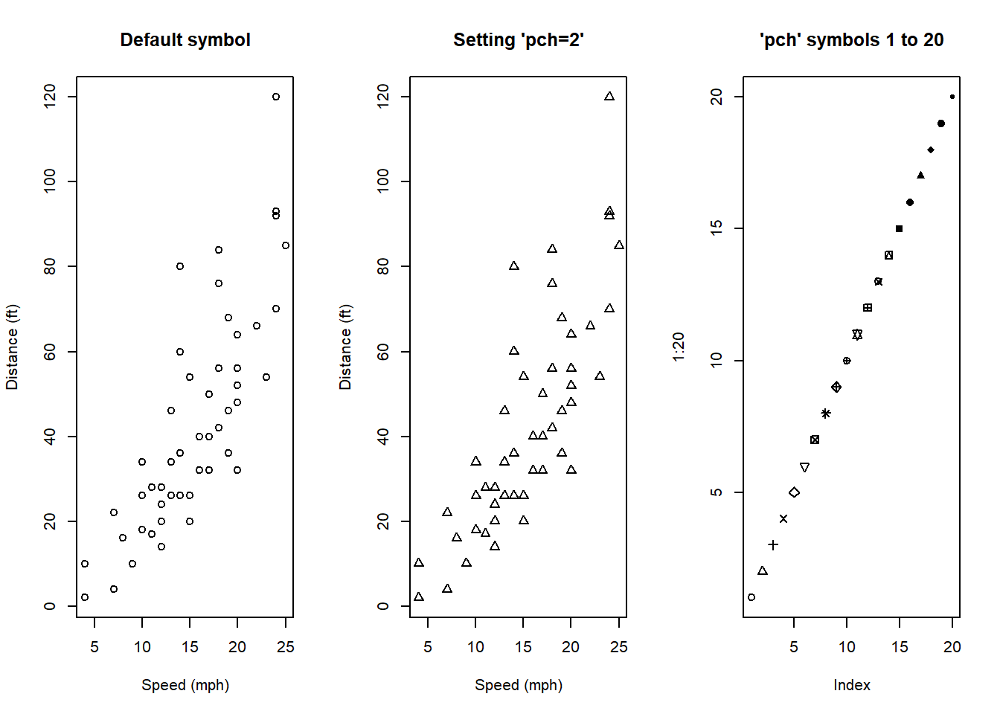
Q1. Search the plot help page for ‘title’, then add an appropriate title to your plot.
Q2. ?points opens the help page for points. Search the help page for ‘pch’ and change the symbol of your plot
Q3. With the cars dataset, plot stopping distance by speed for only those cars with a speed greater than 20.
plot(dist ~ speed, data=cars[cars$speed > 20, ],
xlab="Speed (mph)", ylab="Distance (ft)", pch=2)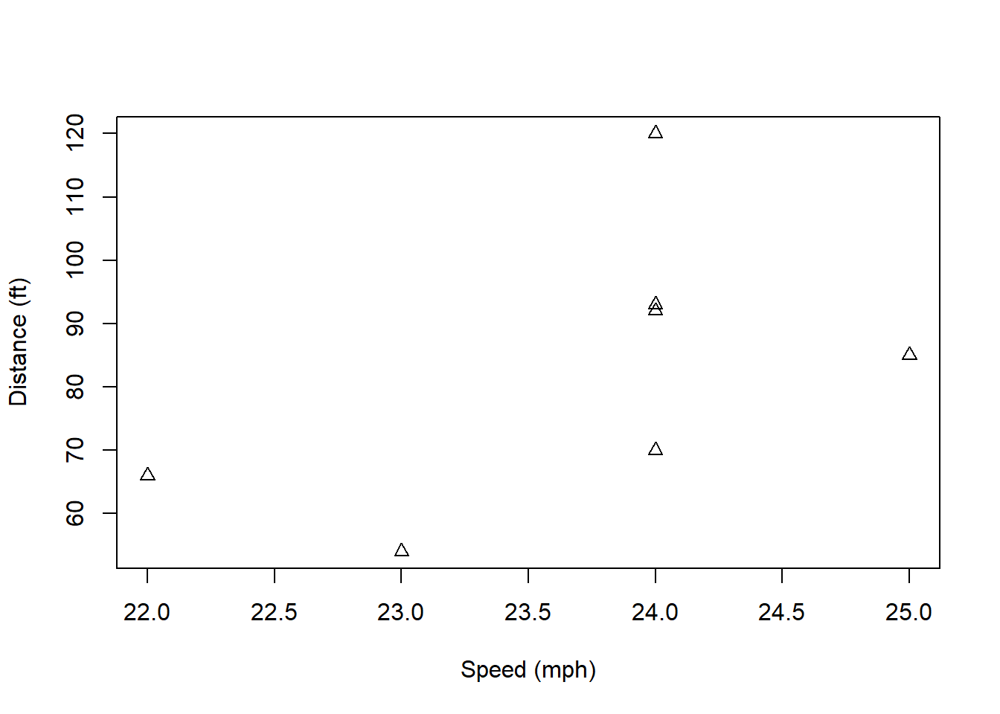
1.2.2 Boxplots
Box plots are used to summarise a continuous variable by levels of a factor. We will use the mtcars dataset to illustrate this.
Explore the dataframe using the strategies covered above. Which variables are categorical? Which are continuous?
head(mtcars, 2) mpg cyl disp hp drat wt qsec vs am gear carb
Mazda RX4 21 6 160 110 3.9 2.620 16.46 0 1 4 4
Mazda RX4 Wag 21 6 160 110 3.9 2.875 17.02 0 1 4 4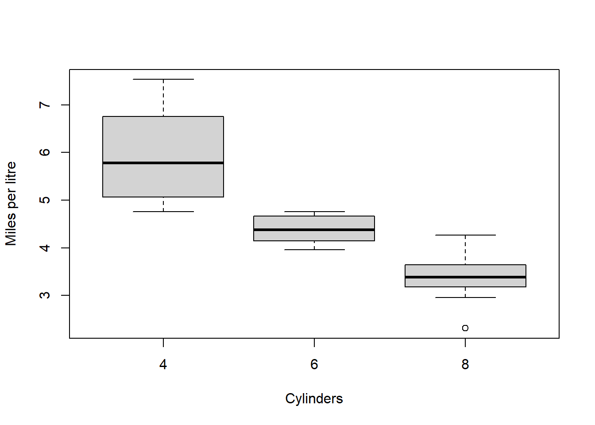
?boxplot
# See examples at bottom of the help page
# Produce a box plot with axes labels and a titleReproduce the plot shown in Fig. @ref(fig:mplcyl-plot) (assume 1 gallon = 4.5 L). Remember you can learn about these data with ?mtcars. You will need to generate a new variable (miles per litre) and label your box plot appropriately. You can limit the extent of the y-axis by adding the argument ylim=c(a, b) where a and b are the limits you want (e.g., ylim=c(0, 100)).
Q4. Use ?boxplot to investigate what the box and whiskers in the box plot actually represent. Check you can reproduce the upper and lower adjacent values manually (see Chapter @ref(appendix))
Note that box plots are not the most visually intuitive. Packages like ggplot2 (and extensions) make alternatives like those in Fig. @ref(fig:mplcyl-ggplot) simple to produce. We will cover some of these later.
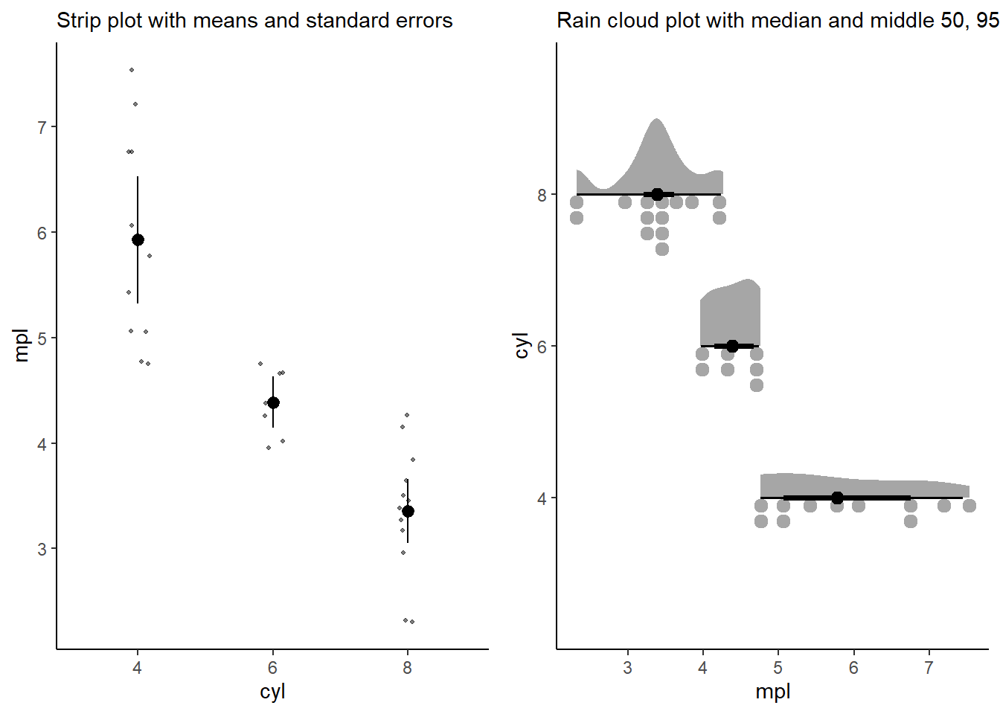
1.2.3 Line plots
Line plots are most often seen in time-series plots with time on the x-axis and the response on the y-axis. Line plots typically involve joining points with a line, which indicates that you have made assumptions about the value of the response variable between successive measurements.
We will examine these plots using the dataset lynx, which consists of the number of Canadian lynx pelts sold per year between 1821 - 1934. It is a ‘classic’ dataset as it shows a cyclical ‘boom-and-bust’ lynx population (demonstrating predator-prey interactions).
First, we will create a variable Year.
str(lynx) Time-Series [1:114] from 1821 to 1934: 269 321 585 871 1475 ...class(lynx) # ts = time-series
lynx2 <- as.data.frame(lynx)
class(lynx2)
head(lynx2, 2)
lynx2$Year <- seq(from=1821, to=1934, by=1)In R, we use functions to perform actions on objects. Functions have arguments, taking the form functionName(arg1=..., arg2=...). If you do not name the arguments, the function will assume that you are listing the arguments in order. See the help file for a function with ? to see the argument order (e.g., ?seq).
Q5. Using seq(), write a piece of code which generates odd numbers between 1 and 20 with and without specifying by.
# change the name of the 1st column to 'Trappings'
names(lynx2)[1] <- "Trappings"
str(lynx2)
lynx2$Trappings <- as.numeric(lynx2$Trappings) # Time-Series is complicated.
str(lynx2)Use ?plot to investigate options for plotting. Find the type= argument for plotting both the points and a connecting line. This might be the best option in this case. Why?
Q6. Using the R plot function, produce a line plot of the Trappings data, as per Figure @ref(fig:lynx-plot).
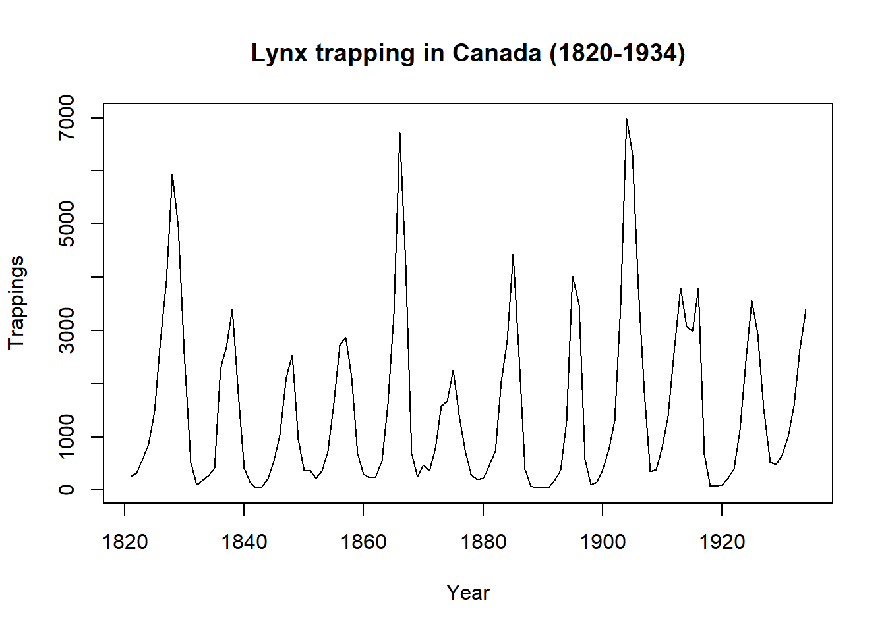
Change the plot to show only the years up to 1900, then plot the Trappings on the log scale.
1.2.4 Histograms
Histograms are used to illustrate the distribution of continuous data. In histograms the bars are adjacent (no gap) and this indicates that there is a continuum (i.e. that the data are not discrete).
# this gives very different information.
hist(lynx2$Trappings, main="Lynx trapping", xlab="Trapped lynx per year")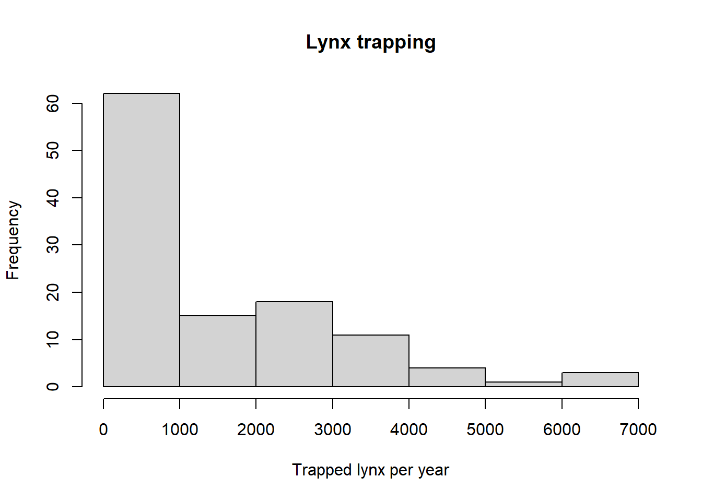
Which range of values was most common across years?
Be aware that histograms can be quite sensitive to the bins that you use.
par(mfrow=c(1,2)) # panels for the plotting window
# R takes the number of breaks as a suggestion
hist(lynx2$Trappings, main="Lynx trapping", xlab="Trapped lynx per year",
breaks=5)
# this forces R to plot according to the defined breaks
hist(lynx2$Trappings,
main="Lynx trapping", xlab="Trapped lynx per year",
breaks=c(0, 500, 1000, 2000, 5000, 10000))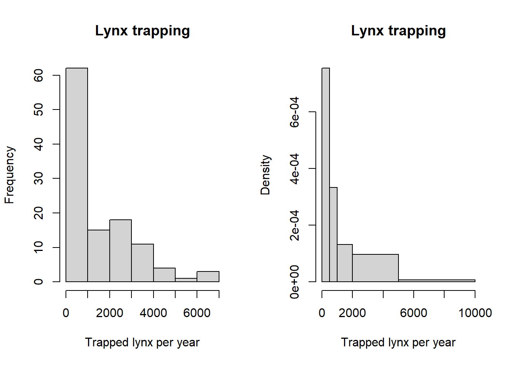
par(mfrow=c(2, 2)) # plot panels (2 rows x 2 columns)
par(mar=rep(2, 4)) # change the plot margins
hist(lynx2$Trappings, main="bin width: 100", xlab="Trapped lynx per year",
breaks=seq(from=0, to=10000, by=100))
hist(lynx2$Trappings, main="bin width: 500", xlab="Trapped lynx per year",
breaks=seq(from=0, to=10000, by=500))
hist(lynx2$Trappings, main="bin width: 1000", xlab="Trapped lynx per year",
breaks=seq(from=0, to=10000, by=1000))
hist(lynx2$Trappings, main="bin width: 2000", xlab="Trapped lynx per year",
breaks=seq(from=0, to=10000, by=2000))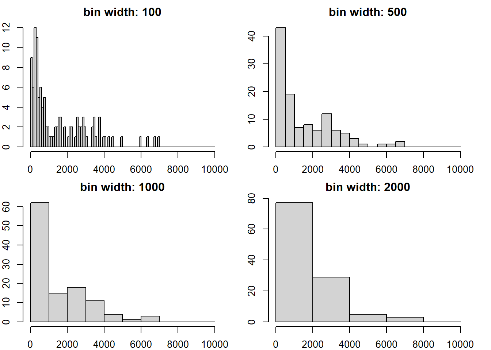
Which of these plots is the most useful? There is no definitive answer to this, but the first is very busy and the last fails to show relevant detail near 0. Setting the bin width to 500 or 1000 communicates the patterns in the data most clearly.
As a general guideline, 5-15 breaks usually work well in a histogram.
1.2.5 Bar graphs
When you create a data.frame it defaults to naming the rows 1…n, where n is the number of rows. You may occasionally come across a data.frame with row names. Converting between data types may lose this information. Consequently, it is better practice to store relevant information in a column.
Bar graphs are used to plot counts of categorical or discrete variables. We’ll be using the islands dataset (which has data stored as row names).
Working with data involves a lot of time spent tidying the datasets: cleaning, checking, and reshaping into useful formats. We will cover a more modern set of methods for this later in the course using the tidyverse package. For now, we’ll stay with base R. First, we need to tidy the islands data.
str(islands)
class(islands) # this is a named numeric vector
head(islands)
# convert to a dataframe
islands.df <- as.data.frame(islands)
head(islands.df, 2)# put the row names into a new column
islands.df$LandMass <- row.names(islands.df)
head(islands.df, 2) islands LandMass
Africa 11506 Africa
Antarctica 5500 Antarctica# set row names to the row number
row.names(islands.df) <- 1:nrow(islands.df)
names(islands.df)[1] <- "Area"
head(islands.df, 2) Area LandMass
1 11506 Africa
2 5500 Antarctica# reorder by area
islands.df <- islands.df[order(islands.df$Area, decreasing=TRUE), ]
head(islands.df, 3) Area LandMass
3 16988 Asia
1 11506 Africa
35 9390 North AmericaWe can use the function barplot() to plot the vector of island areas.
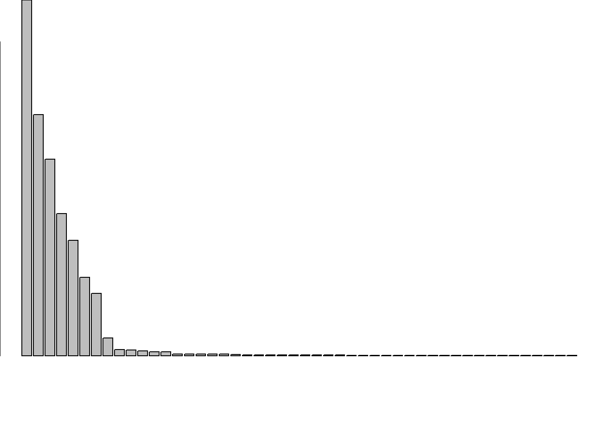
The whole dataset includes a lot of very small areas, so let’s cut it down to just the 10 largest. Since the dataset is already sorted, we can take rows 1:10.
barplot(islands.df$Area[1:10])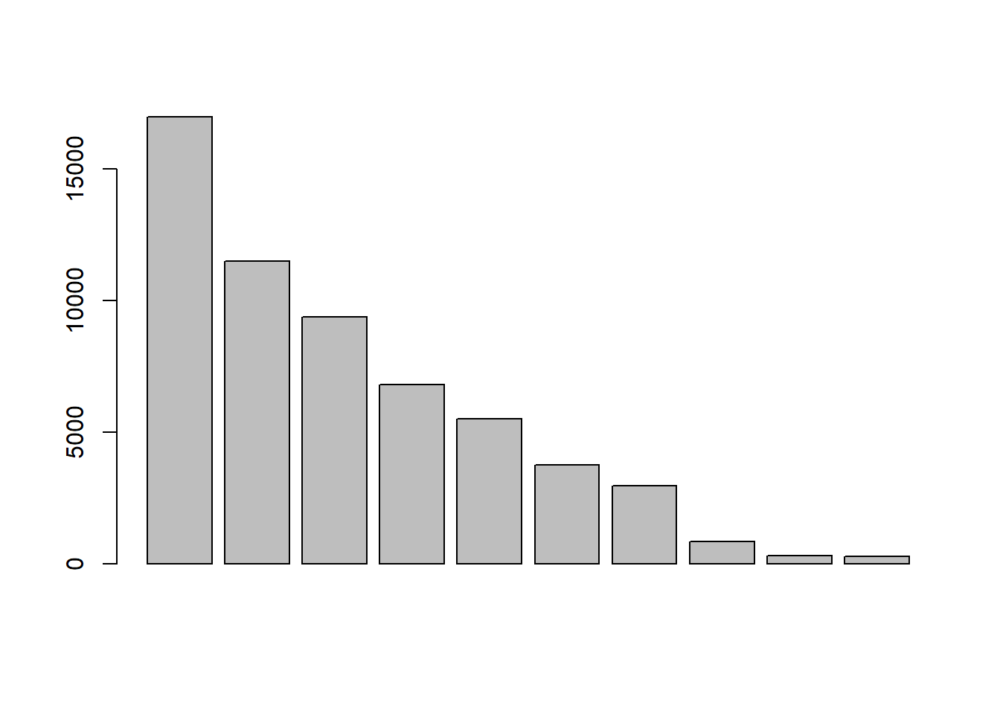
And the next step is to add some names to the x-axis…
barplot(islands.df$Area[1:10], names=islands.df$LandMass[1:10])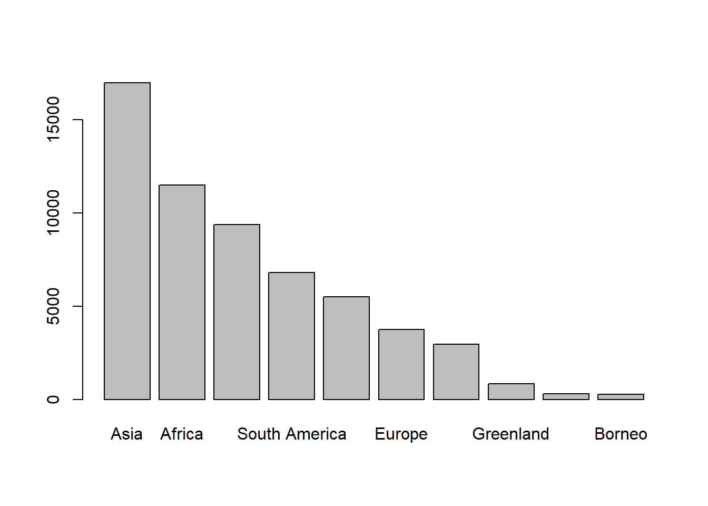
Which of course are unreadable. The las argument (?par) controls how the axis labels relate to the axis line, so we can try adjusting that…
barplot(islands.df$Area[1:10], names=islands.df$LandMass[1:10], las=3)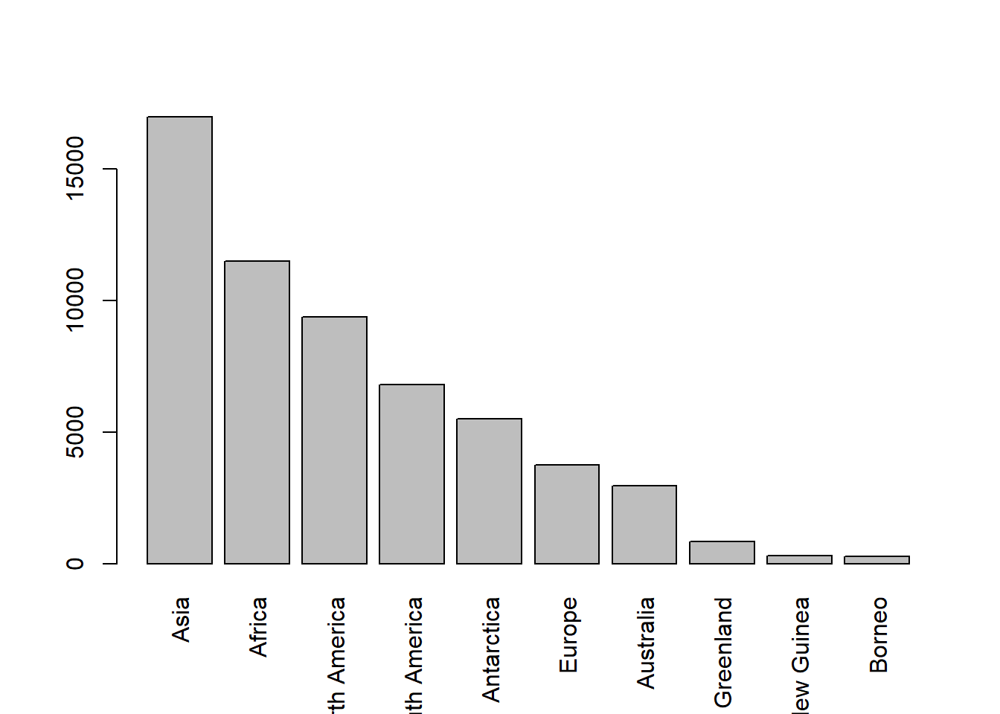
Maybe we just need to make the bars horizontal. To do this, we should adjust the margins again with par(mar=...)), set horiz=TRUE, and las=1, and use [10:1] so the largest is on top.
par(mar=c(4, 10, 0, 0))
barplot(islands.df$Area[10:1], names=islands.df$LandMass[10:1],
horiz=TRUE, las=1, xlab="Area (km2)")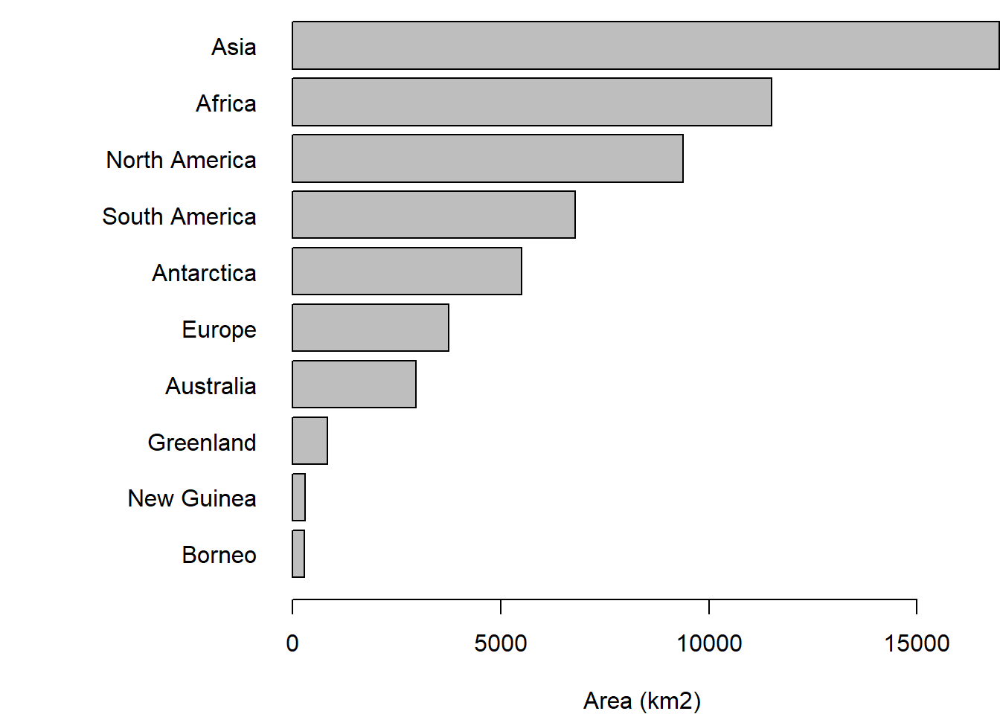
As you may have noticed, visualization is an iterative process with lots of trial and error until you find a plot that communicates the message within the data well. There are several packages (e.g., ggplot2) that make these sort of adjustments and explorations less opaque than all of the options in par().
1.3 Summary statistics
You will often need to summarise your data before you present it. Data summaries are usually contained in tables and they can sometimes replace graphics (e.g., where the data is relatively simple or where individual precise values are important). There are many types of summary statistics. Here we are concerned with central tendency and variability.
Q8. What are the three main measures of central tendency?
Q9. What are three measures of variability?
Measures of central tendency and variability each have pros and cons and you need to be able to apply the most appropriate method to your data. Another summary statistic that you might include is sample size. R is very good at producing summary statistics, and there are myriad ways to produce them. We’ll return to the cars2 dataset.
summary(cars2) dist_ft speed_mph
Min. : 2.00 Min. : 4.0
1st Qu.: 26.00 1st Qu.:12.0
Median : 36.00 Median :15.0
Mean : 42.98 Mean :15.4
3rd Qu.: 56.00 3rd Qu.:19.0
Max. :120.00 Max. :25.0 summary(cars2[cars2$speed_mph > 20, ]) Often you’ll wish to summarise your data across levels of a certain factor. For example, levels of a certain treatment that you are applying. More complex summaries can be made using the dplyr package. We’ll go into more detail later on some of the very powerful ways this package (and its friends in the tidyverse) can be used.
First, you’ll need to install it. The tidyverse is a collection of packages. Install all of them with install.packages("tidyverse") (see Section @ref(R_intro)).
We’ll use the built-in dataset InsectSprays. Viewing your raw data can be an important check as well. You can open a spreadsheet-style viewer in R using View(YourDataFrame).
str(InsectSprays)'data.frame': 72 obs. of 2 variables:
$ count: num 10 7 20 14 14 12 10 23 17 20 ...
$ spray: Factor w/ 6 levels "A","B","C","D",..: 1 1 1 1 1 1 1 1 1 1 ...glimpse(InsectSprays) # glimpse() is loaded with tidyverseRows: 72
Columns: 2
$ count <dbl> 10, 7, 20, 14, 14, 12, 10, 23, 17, 20, 14, 13, 11, 17, 21, 11, 1…
$ spray <fct> A, A, A, A, A, A, A, A, A, A, A, A, B, B, B, B, B, B, B, B, B, B…# spray is the categorical predictor; count is the response
View(InsectSprays)To do more complex summaries, we’re going to string together a series of functions. This can be done in a nested format (e.g., fun1(fun2(fun3(dataset)))), but this gets unwieldy very quickly.
So, let’s use the pipe operator |>. This takes the output from one function and feeds it as the first input of the next (e.g., dataset |> fun3() |> fun2() |> fun1()), making code much more legible. Many functions in the tidyverse are built for piping.
?`|>`# it is very easy to calculate any number of summary statistics
InsectSprays |>
group_by(spray) |>
summarise(mean=mean(count) |> round(2),
median=median(count),
max=max(count),
sd=sd(count) |> round(2),
N=n(),
N_over_10=sum(count > 10))# A tibble: 6 × 7
spray mean median max sd N N_over_10
<fct> <dbl> <dbl> <dbl> <dbl> <int> <int>
1 A 14.5 14 23 4.72 12 9
2 B 15.3 16.5 21 4.27 12 11
3 C 2.08 1.5 7 1.98 12 0
4 D 4.92 5 12 2.5 12 1
5 E 3.5 3 6 1.73 12 0
6 F 16.7 15 26 6.21 12 101.3.1 Choosing a measure of central tendency
The choice of which measure of central tendency to use depends on the nature of the data and objectives of your research. We will use datasets that you downloaded from Brightspace (Practicals > data). Remember to put these into the data folder in your working directory (or modify the file paths in the code accordingly).
library(readxl) # installed with tidyverse, but not loaded in library(tidyverse)
# this will load the 'Scallop %fat' data sheet from the xlsx spreadsheet.
scallop_df <- read_excel("data/practical_1.xlsx", sheet="Scallop %fat")
str(scallop_df)tibble [49 × 1] (S3: tbl_df/tbl/data.frame)
$ Scallop % fat: num [1:49] 22.5 24.1 18.2 32.5 17.4 23.6 21.5 22.2 27.6 22.2 ...# avoid spaces and symbols in column names. It's a pain.
names(scallop_df) <- "fat_pct"Q10. Check the data using the methods above. Does it look OK to you?
Q11. Are these data likely to be continuous or discontinuous?
Q12. Create a plot to visualize the distribution of these data.
Q13. Do you spot any issues?
hist(scallop_df$fat_pct, main=NULL) # (what does 'main=NULL' do?)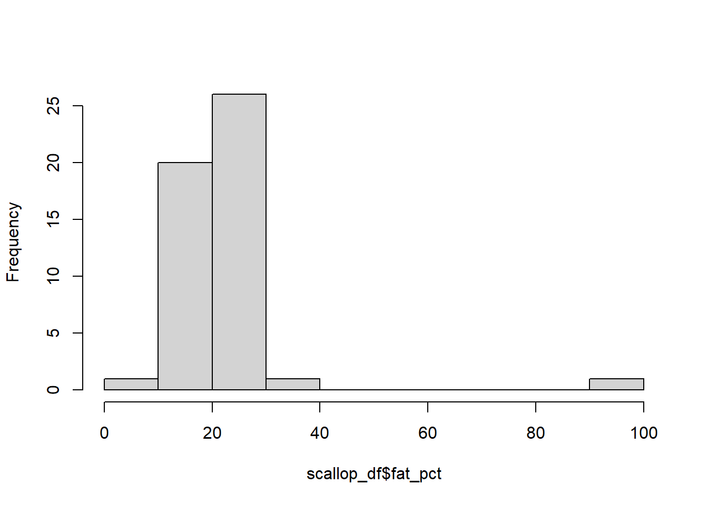
You should have spotted a potential outlier. Data entry errors are very common, and a check against the original data sheet shows that the decimal was typed in the wrong place. The following code helps you ID which data entry is in error. We can now search for the ‘odd’ observation i.e. determine in which row the outlier is located.
which(scallop_df$fat_pct > 50) [1] 36scallop_df$fat_pct[35:37] # row 36 is 99, but should be 9.9[1] 22.8 99.0 12.9scallop_df <- scallop_df[, c(1, 1)] # duplicate column
names(scallop_df) <- c("fat_pct_orig", "fat_pct_corr")
head(scallop_df, 2)# A tibble: 2 × 2
fat_pct_orig fat_pct_corr
<dbl> <dbl>
1 22.5 22.5
2 24.1 24.1# there are many ways to 'fix' the outlier in R.
# You need to correct the outlier in row 36 of column 'fat_pct_corr'
scallop_df$fat_pct_corr[36] <- 9.9
which(scallop_df$fat_pct_corr > 90)
# integer(0) - this means that no elements in fat_pct_corr contain values >90Now summarise scallop_df using some of the methods above.
Q14. Create a histogram for the corrected column. How does it differ from the original column with the error?
Q15. Calculate mean, variance, median, interquartile range, minimum, maximum and range for both fat_pct_orig and fat_pct_corr.
Q16. Suppose the outlier was even bigger (i.e. you typo was even worse). Adjust your data, multiplying the erroneous data item by 10; copy the ‘_orig’ column and change row 36 in that column to 999.
Q17. Calculate the same summary statistics.
Q18. Which measures of central tendency and variability are most ‘robust’ against this outlier?
Or look individually instead of calculating many metrics at once with dplyr functions:
summary(scallop_df$fat_pct_corr) Min. 1st Qu. Median Mean 3rd Qu. Max.
8.50 16.90 20.60 19.56 22.50 32.50 var(scallop_df$fat_pct_corr)[1] 22.79836IQR(scallop_df$fat_pct_corr)[1] 5.6R is excellent at generating well formatted tables such as shown in Table @ref(tab:scallop-table). What is missing from from Table @ref(tab:scallop-table)?
| Column | Mean | Median | Standard deviation | Range | Interquartile range |
|---|---|---|---|---|---|
| fat_pct_corr | 19.6 | 20.6 | 4.77 | 24.0 | 5.6 |
| fat_pct_orig | 21.4 | 20.6 | 12.20 | 90.5 | 5.3 |
Q19. How would the patterns seen in Table @ref(tab:scallop-table) influence your choice if you were required to summarise data that you thought might contain data that you weren’t sure about? The three measure of central tendency are influenced to different extents by the ‘shape’ of the data they are used to describe.
hake_df <- read_excel("data/practical_1.xlsx", sheet="Hake")
str(hake_df) # once again, column names made for excel rather than Rtibble [499 × 2] (S3: tbl_df/tbl/data.frame)
$ Year : num [1:499] 1 1 1 1 1 1 1 1 1 1 ...
$ Hake length (mm): num [1:499] 190 219 181 148 206 204 168 197 178 211 ...Q20. What type of variable is length?
Q21. Select an appropriate graphical method and display these data.
Q22. In your own time, use the dplyr functions to summarise the hake data by year.
| Year | Mean length (cm) |
|---|---|
| 1 | 201.8 |
| 2 | 497.0 |
| 3 | 988.9 |
Try to re-create Table @ref(tab:hake-table).
The following ‘settling velocity’ data relates to the settling velocity of salmon faecal material. Shona Magill generated these data.
library(readxl)
fishPoo_df <- read_excel("data/practical_1.xlsx", sheet="Settling velocity")
str(fishPoo_df)tibble [200 × 1] (S3: tbl_df/tbl/data.frame)
$ Settling velocity (mm s-1): num [1:200] 2.06 1.03 1.56 1.88 1.16 0.76 1.26 1.13 1.23 1.31 ...Q23. Produce a histogram of the settling velocity. Is it left or right skewed?
Q24. Which measures of central tendency and variability are most appropriate?
Q25. Sketch the distribution and indicate the relative positions of the mean and median.
Q26. Generate a new column of the log-transformed settling velocity data and plot these data.
Q27. What measures of central tendency and variability could be applied to the log-transformed data? Selecting the preferable measure of central tendency and variability in a dataset is not necessarily straightforward.
Table 1.3 gives some indication of what issues you might consider.
| Data distribution | Central tendency metric | Variability metric |
|---|---|---|
| Continuous, | ||
| unimodal, symmetric | Mean | Variance or sd |
| Continuous, skewed | Median | Interquartile range |
| Continuous, | ||
| multimodal | None; state modes | None; summarise by |
| group | ||
| Discontinuous | None; data-dependent | Range? |
1.4 Conclusions
Visualizing and summarising data are the critical first steps in the data analysis and reporting workflow. We use graphical methods to firstly explore our own data. Once we have made sense of it we select the most appropriate method to convey that understanding to our readers. We may help that communication by summarising data in the most appropriate way taking into account the distribution of the data and the presence of outliers.